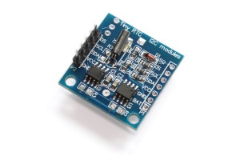
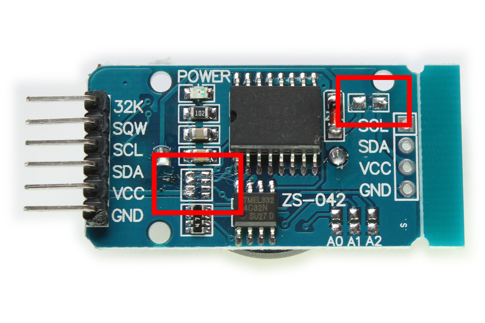
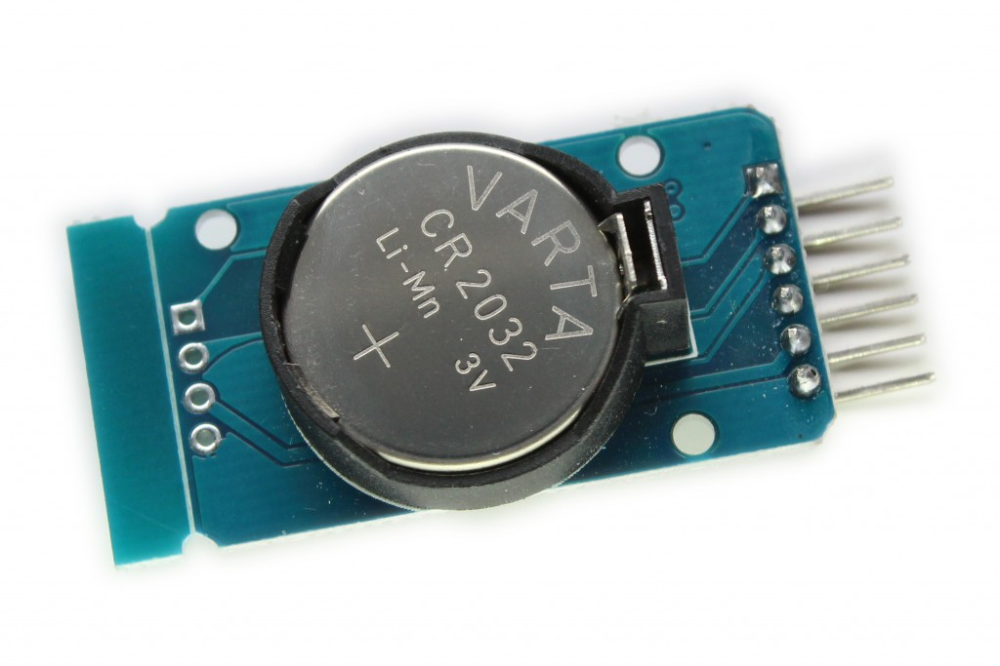
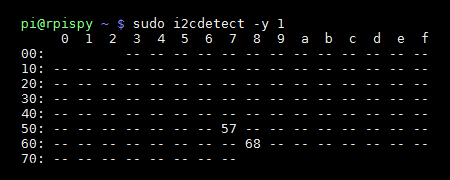
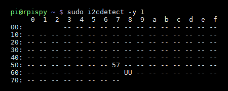
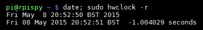

{kind=link}
While your Pi is connected to a network it will be able to set it’s clock correctly using NTP. Without a network connection the system time and date will almost certainly be wrong. For some projects this is a problem especially if you are logging timestamps or performing other time sensitive operations.
This can be solved using a Real Time Clock (RTC) module. This will use a small coin cell battery to keep the time for the Pi even if it is turned off. When the Pi reboots it can set it’s own internal clock using the time held in by the RTC.
The easiest way of implementing an RTC is to buy a pre-made module. Luckily RTC modules are relatively cheap and easy to obtain. Some modules will attach directly the Pi’s GPIO header but these may get in the way of other devices so I prefer more generic modules that keep the GPIO clear for other purposes.
DS1307 or DS3231?
Modules based on the DS1307 and DS3231 chips are popular devices and you’ll see them for sale from various retailers. I purchased both types and quickly realised my DS1307 modules were useless. My advice would be to go for a DS3231 based module. They are more accurate and run happily from 3.3V. My two “Tiny RTC” DS1307 modules went straight in the bin.
Resistor Removal
Most generic I2C modules have pull-up resistors on the SDA and SCL pins but these aren’t required as the Pi has it’s own pull-ups. I didn’t want these on-board resistors to interfere with the operation of the I2C bus so I removed them.
The module also has a basic charging circuit for use with a rechargeable LIR2032 coin cell. I wanted to use a normal non-rechargeable cell so I removed another resistor to disable this charging circuit. The resistors were removed from the module using a soldering iron and some tweezers or small pliers. The location of the resistors is shown in the photo below :

The pull-up resistors are the block marked in red on the left. The charging circuit is the block marked in red on the right.
I2C Setup
As with all I2C devices you must configure the I2C interface. This is quite easy to do and explained in my Enabling The I2C Interface On The Raspberry Pi tutorial.
DS3231 Module Setup
In order to ensure you’ve got the latest updates you should run the following commands :
sudo apt-get update sudo apt-get -y upgrade
Now we need to modify a system file using :
sudo nano /etc/modules
If it isn’t already there add “rtc-ds1307” to the bottom so it looks something like :
snd-bcm2835 i2c-bcm2835 i2c-dev rtc-ds1307
You can save and quit using CTRL-X, Y and ENTER.
Shutdown the Pi using “sudo halt” and remove the power when it has completed the process.
Hardware Setup
With the Raspberry Pi turned off you can now connect the module. It’s a fairly simple configuration but it needs to be correct so double check it. Refer to my GPIO Diagram to ensure you get the correct pins on the Pi’s header.
| DS1307 | Pi GPIO |
|---|---|
| GND | P1-06 |
| Vcc | P1-01 (3.3V) |
| SDA | P1-03 (I2C SDA) |
| SCL | P1-05 (I2C SCL) |
Don’t forget the 3V battery!

Interface Test
Power up the Pi and run the following command :
sudo i2cdetect -y 1
Note : If you are using a Rev 1 you will need to use “sudo i2cdetect -y 0”.
You should see something similar to this :

In this example “68” is the hex address of the RTC module on the I2C interface.
I2C Device Setup
To ensure the DS1307 device is setup and the time synchronised when the Pi boots we need to edit another system file :
sudo nano /etc/rc.local
Add the following two lines before the exit 0 line :
echo ds1307 0x68 > /sys/class/i2c-adapter/i2c-1/new_device hwclock -s
so it looks something like :
Note : If you are using a Rev 1 you will need to use “/i2c-0/” instead of “/i2c-1/”.
You can save and quit using CTRL-X, Y and ENTER.
Now reboot the Pi using :
sudo reboot
Now when you repeat the i2cdetect command (see above) the 68 will turn into UU :

Time Zones and Daylight Saving Time
By default the Pi tends to show time as GMT or UTC. For me sat in Bristol this results in the time being 1 hour behind my local time. To tell your Pi what region you are in you can use :
sudo raspi-config
and then select “Internationalisation Options” followed by “Change Timezone”. You can then select you location from the following screens.
I set my location to “Europe/London” and this results in “date” showing the time in BST (British Summer Time) rather than UTC. The time is then correctly adjusted by +1 hour.
Reading The Date And Time
You can read the Pi’s system time using :
date
If you need to set the system time for any reason you can use the following command :
sudo date -s "29 AUG 1997 13:00:00"
Once correct you can write the system date and time to the RTC module using :
sudo hwclock -w
You should be able to read the date and time back from the RTC using :
sudo hwclock -r
By separating the commands with a semi-colon you can read back the system time and the RTC time at the same time. Hopefully they should match and look something like this :

The “hwclock -s” we added to “rc.local” sets the system time from the RTC module.
The Final Test
The final test is to determine if the RTC module is keeping time and that the Pi will use that time when it boots. The best way to do that is to :
- Power down the Pi
- Remove the power cable
- Remove the network connection
- Attach the Pi to a monitor and keyboard
- Leave it overnight
- Power it up and use “date” to see what time the Pi thinks it is
Hopefully your Pi is now displaying the correct date and time and will maintain it when the Pi is powered down.
{kind=link}
7 Comments
Hi, you say the 1307 is pretty worthless but in your scripting you keep using it. Does the 3231 use the same libraries as the 1307 ? Or should i add ds3231 as a module?
The 3231 can use the same libraries. You may be able to replace references to “1307” with “3231” but I didn’t get a chance to test that.
Thanks for sharing. Could you please answer these questions: 1) why did you disable LIR recharge feed for a CR battery ? 2) why not use ntp (more accurate) to setup system time/date and then set hwclk ? 3) do you really need to remove the pull-up resistor ?
1) I couldn’t find a definitive source of information that would confirm it was safe to recharge a standard coin cell that wasn’t specifically rechargeable. So I was playing it safe.
2) You could use any technique to set the time. I just went for something basic for the sake of this tutorial. For my own experiments I tend to just connect the Pi to ethernet and let the time sync with ntp, then set the RTC module from that.
3) I’m sure it would work without removing the resistors but if you are using multiple I2C modules that all have their-own pull-ups it can cause intermittent problems.
Hi, which of the two red blocks (resistors removed) is the pull-up?
Thanks
I’ve updated the post text. The pull-ups are on the left, the charging circuit on the right.
Thanks, this is great. My Pi now always knows what the time is.